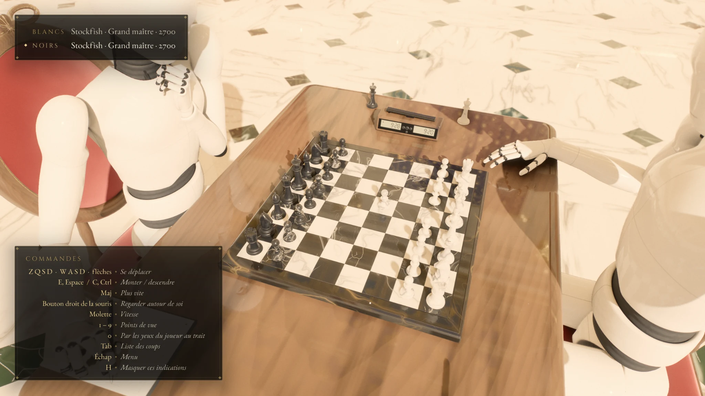
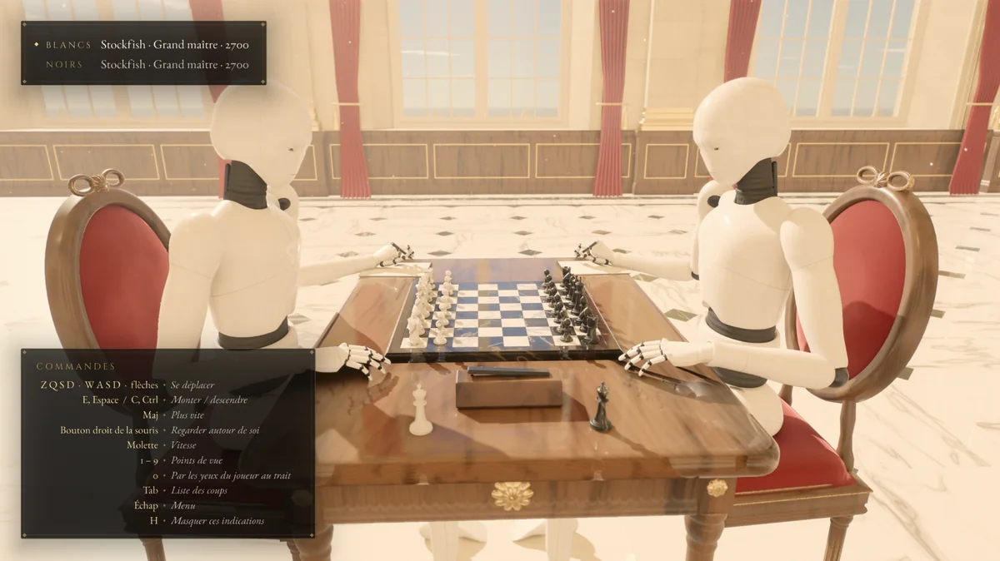
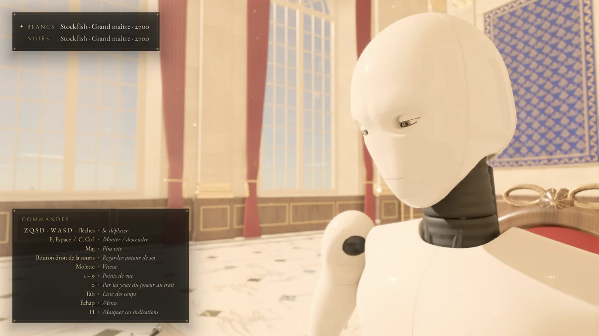
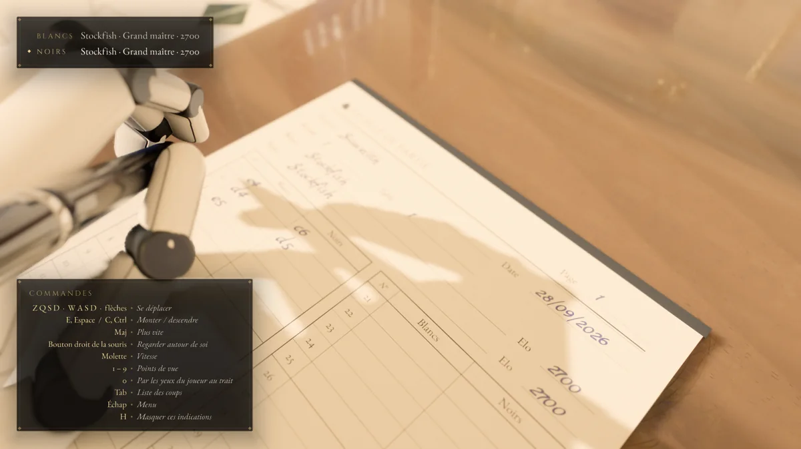

A seat at the table
A physical board, an opponent in front of you, and the atmosphere of a real encounter. The familiar ritual of chess, brought into 3D.

The timeless game, reimagined
The quiet focus. The presence of your opponent.
The world beyond the sixty-four squares.
In development. Not yet available to download.
01 / The experience
Chess is more than the next move. It is the feeling of sitting across from someone, with a board between you and a game ahead.
Scacelith is being built to bring that feeling to your screen: an ultra-realistic chess experience inspired by over-the-board (OTB) play, in a richly detailed three-dimensional setting.
A physical board, an opponent in front of you, and the atmosphere of a real encounter. The familiar ritual of chess, brought into 3D.
Marble pieces, polished wood, a handwritten scoresheet. From the light in the room to the clock on the table, every detail brings you closer.
Stockfish integration powers solo play, bringing a world-class chess engine to the other side of the board.
02 / A closer look
Real screenshots. A world taking shape.
All images show a work in progress.

The atmosphere of an over-the-board encounter.

A different perspective on your next move.

The small details that make chess feel real.
Select a screenshot to see the full frame.
03 / In the making
Scacelith is under active development. The experience is evolving, and the screenshots offer an early look at the game.
There is no public download or announced release date yet. For now, consider this your first look across the board.
Human vision. AI-assisted development.
Developed with the assistance of Claude Opus 5.5.